| 日付 | 2020年8月2日（日） - 2020年8月6日（木） | ||||
|---|---|---|---|---|---|
| 山域 | 妙高周辺 | ||||
| メンバー | 家族（妻、長女・9歳、長男・7歳） | ||||
| 山行形態 | 子連れ4泊5日キャンプ | ||||
| アクセス | 車 | ||||
| ルート |
|
5日目
子供達は昨日友達になった子と朝から遊んでいる。その間に親は撤収作業。
4泊お世話になったキャンプ場を後にする。
ゴミ持ち帰りなのが長期滞在者には辛いルールだったが、それ以外は快適なキャンプ場だった。
1日目と4日目に少し夕立があっただけで、ほとんど雨が降らなかったのも幸いだった。
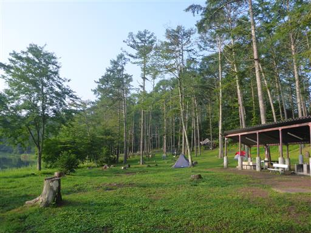
最終日は街観光。善光寺を見学することにする。長野にある有名な寺院だ。
周囲の景色はどことなく京都と似ている。
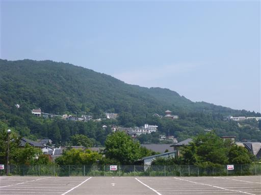
駐車場から案内標識に沿って境内に入る。
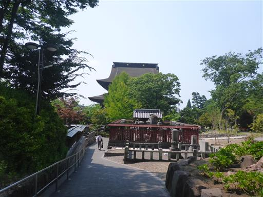
目の前に本堂が現れる。とにかく巨大な建築物だ。
しかし、駐車場から歩くと裏から入っていきなり本堂裏手に出るので気分が盛り上がらない。
やはり表から山門を潜って本堂に辿り着く方が気分が盛り上がる。
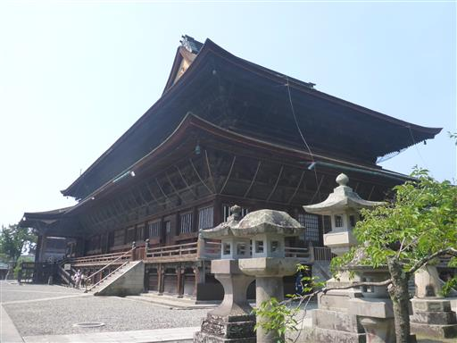
本堂表に回り込む。東大寺に匹敵する大きさ。
中でお戒壇巡りを体験。御本尊様の真下を通る真っ暗闇の廊下を手探りで進む。
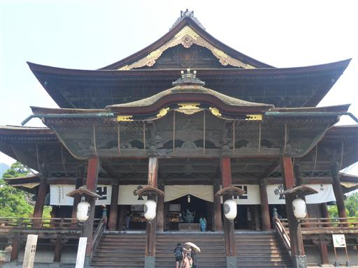
続いて山門を見学。中に入ることができる珍しい山門だ。
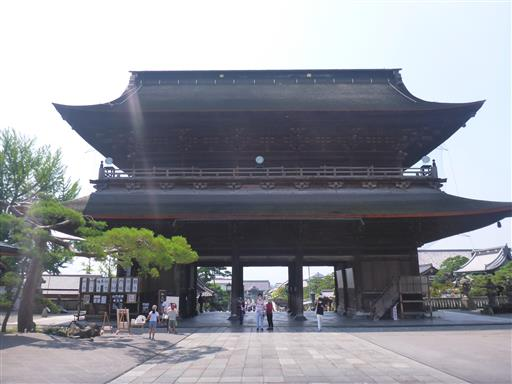
山門をぐるっと一回り。
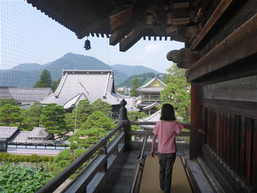
山門から眺める表参道。遠くに見えるのは仁王門だ。
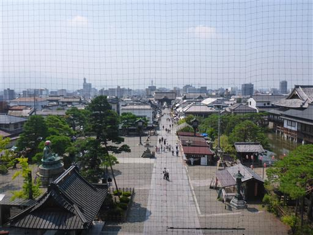
本堂。良い眺めだが網が少々邪魔だ。
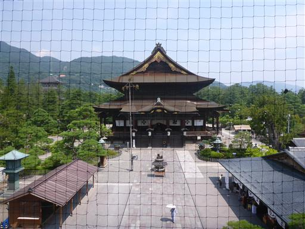
山門の下に掛かる絵馬。ずいぶんと立派な絵馬だ。
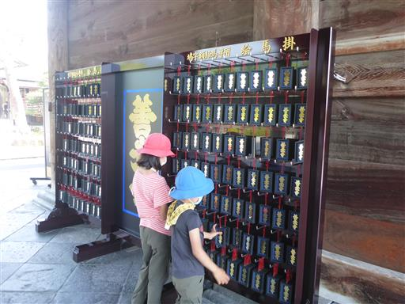
山門を潜って表から眺める。
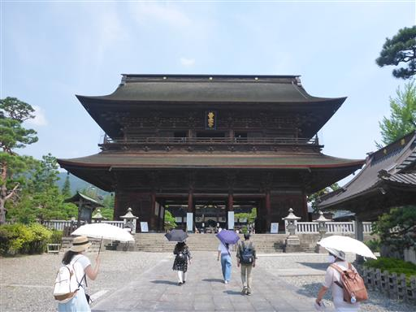
蓮池。
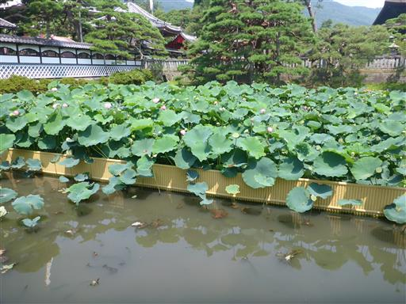
美しい蓮の花がたくさん咲いている。
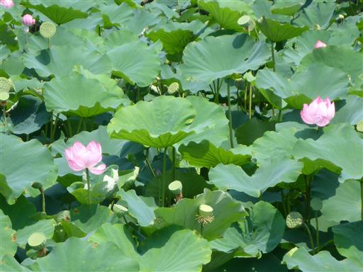
池には多くの亀が住んでいる。何匹か甲羅干ししている。
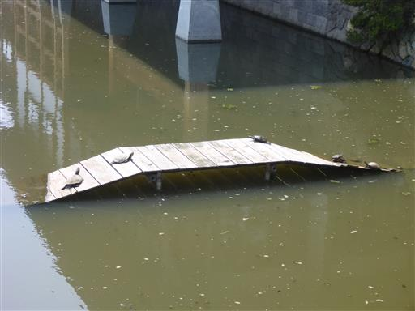
続いて経蔵を見学する。中央に八角の輪蔵があり、皆で回す。
中に入っているお経だけで1トン以上あるそうで、かなり重い。一人だと回らないかも。
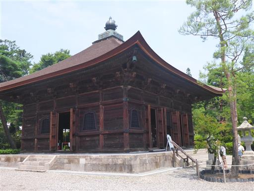
経蔵の前には輪廻塔がある。こちらもぐるぐる回せる。
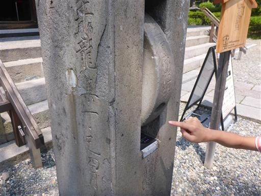
続いて資料館を訪問。三重塔の形だが、歴史ある建造物ではない。
さほど興味はなかったが、全てに入れるチケットを買ったので軽く見て回る。
善光寺はお戒壇巡りや山門入場は有料だが、参拝自体は無料ででき、かなり良心的だ。
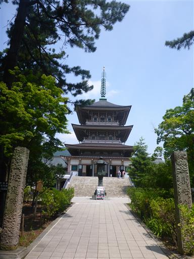
昼近くになったので、仲見世通りを歩いて昼食処を探す。

立派な仁王門。
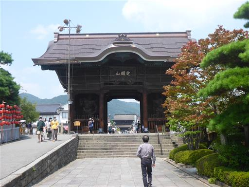
洋食屋を探したがどこも満席で、「かどの大丸」という蕎麦屋で蕎麦を食べる。
周囲に並ぶ店の多くが蕎麦屋であまりバリエーションが無い。
これで善光寺観光はお終い。帰宅の途に就く。
今回の旅行で秋田に行けなかったのは返す返すも残念だったが、
天気は予報より悪くなく、最低限いくつかの山には登れて、
前日に計画を立てた割には、それなりの旅行を楽しむことができた。
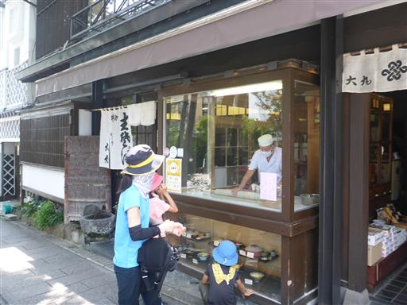